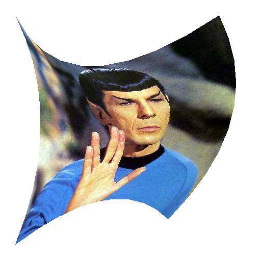
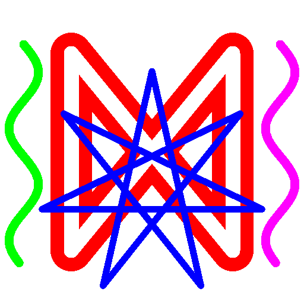

CS 475: Fall 2024
Final
 


The final will be an in-room programming assignment. Like the others, you will clone starter
code from github onto your laptop, copy over your existing code, and begin. When you are
finished, or time expires, submit your code back up to github. You must submit your code back to github to get credit.
Honor code is in effect! You may use your previous notes and code, but
you may not get code or assistance from the internet, AIs or assistants, or other people,
class GFinal {
public:
...
};
std::unique_ptr<GFinal> GCreateFinal();
Create a subclass of GFinal and return it from your implementation of GCreateFinal(). There are 6 virtuals
> make
> ./image -e expected -v
As always, test your code on the VM, since that is where I will test it.